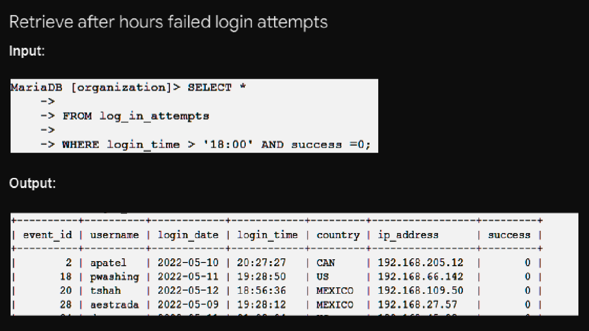

Database used is Maria-DB-organisation
In this SQL-based project, we aim to extract specific information from organizational databases using structured query language (SQL) commands.
The project involves querying various tables, such as "log_in_attempts" and "employees," to retrieve valuable insights and meet specific criteria.
The queries are designed to filter data based on conditions, allowing us to extract meaningful information.